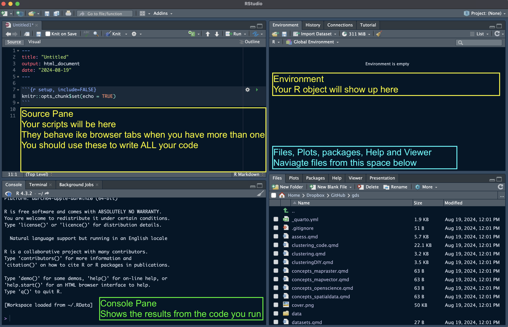
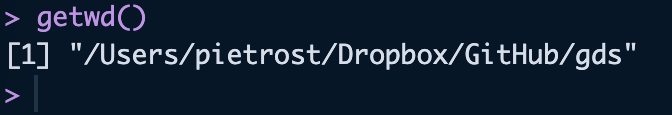

Code
rm(list = ls())This page has two parts:
To run the code in this course in R, you need the following software:
To install or update:
To check your version of:
sessionInfo() in the ConsoleHelp on the menu bar and then About RStudioquarto --versionUpon startup, RStudio will look something like this. The Pane Layout and Appearance settings can be changed under Tools > Global Options > Pane Layout and Tools > Global Options > Appearance (on macOS, this is also available under RStudio > Settings). I personally like to have my Console in the top right corner and Environment in the bottom left, and keep the Source and Environment panes wider than Console and Files for easier readability. Default settings will probably have the Console in the bottom left and Environment in the top right. You will also have a standard white background, but you can choose a different editor theme under Appearance.

At the start of a session, it’s good practice to start from a clean R environment. You can clear all objects with:
rm(list = ls())To make sure every session starts clean, go to Tools > Global Options > General and untick Restore .RData into workspace at startup, and set Save workspace to .RData on exit to Never.
In this course we write all our code in Quarto documents (.qmd) rather than R scripts (.R). A Quarto document lets you mix text, code and outputs (tables, maps, plots) in one file, and render it to an HTML page with the Render button. This is also the format you will use for your assignments, which are submitted as HTML files, so getting used to it now will make things much easier later.
We also work with relative paths, which means file paths are written relative to where your document is saved (e.g. data/London/Tables/...) rather than as full paths on your computer (e.g. C:/Users/yourname/Documents/...). Relative paths mean your code keeps working if you move the course folder, and it will run on someone else’s computer too.
The key rule is simple: code in a Quarto document runs from the folder where the .qmd file is saved. So you don’t need setwd(); you just need to save your .qmd in the right place. The easiest set-up is to save your .qmd files in the main course folder, next to the data folder:
envs363_563/
├── data/
│ └── London/
│ └── Tables/
│ └── Densities_UK_cities.csv
├── lab_01.qmd
└── lab_02.qmdFrom lab_01.qmd, the path to the csv file is then simply "data/London/Tables/Densities_UK_cities.csv". If you prefer to keep your .qmd files in a subfolder (e.g. labs/), use .. to go up one level first: "../data/London/Tables/Densities_UK_cities.csv".
To create a new Quarto document in RStudio, go to File > New File > Quarto Document…, then save it in your course folder. You can check which folder your code is running from by running getwd() in a code chunk:
getwd()
Opening the course folder as an RStudio Project (File > New Project > Existing Directory) keeps the Files pane, Console and Terminal pointed at your course folder, which makes it easier to find your files. Open it by double-clicking the .Rproj file.
Avoid setwd() and full paths (e.g. "C:/Users/yourname/..." or "~/Desktop/...") in your Quarto documents. They will break as soon as the file is moved or opened on another computer, including when your assignment is marked.
In R, packages are collections of functions, compiled code and sample data. They act as “extensions” to the base R language and cover almost anything you might want to do in R (and if no package serves your purpose, you can write your own!).
There are two steps to using a package, and it helps to keep them apart:
install.packages(). Run this in the Console, not in your .qmd, otherwise R will try to reinstall the package every time you render your document.library() every time you start a new R session or render a Quarto document. This goes at the top of your .qmd.# Run once, in the Console
install.packages("tidyverse")# At the top of every .qmd that uses it
library(tidyverse)── Attaching core tidyverse packages ──────────────────────── tidyverse 2.0.0 ──
✔ dplyr 1.1.4 ✔ readr 2.1.5
✔ forcats 1.0.0 ✔ stringr 1.5.1
✔ ggplot2 4.0.0 ✔ tibble 3.3.0
✔ lubridate 1.9.4 ✔ tidyr 1.3.1
✔ purrr 1.1.0
── Conflicts ────────────────────────────────────────── tidyverse_conflicts() ──
✖ dplyr::filter() masks stats::filter()
✖ dplyr::lag() masks stats::lag()
ℹ Use the conflicted package (<http://conflicted.r-lib.org/>) to force all conflicts to become errorsThe packages used in this course are listed below, grouped by what they are used for:
| Purpose | Packages |
|---|---|
| Data wrangling | tidyverse, dplyr, tidyr, tibble, readr, data.table, R.utils |
| Spatial vector data | sf, geojsonsf, osmdata |
| Raster data | terra, raster, exactextractr, tidyterra |
| Maps and plots | tmap, ggplot2, ggspatial, mapview, basemapR, rosm, patchwork, GGally |
| Colours and classification | RColorBrewer, viridis, colorspace, classInt |
| Spatial statistics | spdep, rgeoda, gstat, spatstat, eks |
| Clustering | cluster, dbscan, fpc |
| Networks | igraph, tidygraph |
Install all of them by running the code below in the RStudio Console. It only installs the packages you don’t already have, so it is safe to run more than once. The first run can take a while.
# Packages available on CRAN
cran_packages <- c(
"tidyverse", "data.table", "sf", "tmap", "readr", "geojsonsf", "osmdata",
"RColorBrewer", "classInt", "R.utils", "dplyr", "ggplot2", "viridis",
"raster", "terra", "exactextractr", "tidyterra", "spdep", "tibble",
"patchwork", "rosm", "tidyr", "GGally", "cluster", "rgeoda", "mapview",
"ggspatial", "colorspace", "gstat", "spatstat", "dbscan", "fpc", "eks",
"igraph", "tidygraph", "remotes"
)
# Install any CRAN packages that are missing
missing_packages <- setdiff(cran_packages, rownames(installed.packages()))
if (length(missing_packages) > 0) install.packages(missing_packages)
# basemapR is not on CRAN, so it is installed from GitHub
if (!requireNamespace("basemapR", quietly = TRUE)) {
remotes::install_github("Chrisjb/basemapR")
}To check that everything installed correctly, run:
all_packages <- c(cran_packages, "basemapR")
setdiff(all_packages, rownames(installed.packages()))If this returns character(0), you are all set. If it lists any package names, try installing those individually with install.packages("name") and read the error message in the Console. If R asks whether you want to install from source a package that needs compilation, answering No usually works and is faster.
This part is an introduction to R for those who are new to it, or a refresher if you have used R before. Run the code chunks in a .qmd document of your own as you go.
Try to use the console to perform a few operations. For example type in:
1 + 1[1] 2Slightly more complicated:
print("hello world")[1] "hello world"If you are unsure about what a command does, use the “Help” panel in your Files pane or type ?function in the console. For example, to see how the dplyr::rename() function works, type in ?dplyr::rename. The double colon syntax in that command calls a function from a package without loading the whole package with library().
Everything in R is an object. R possesses a simple generic function mechanism which can be used for an object-oriented style of programming. Indeed, everything that happens in R is the result of a function call (John M. Chambers). Method dispatch takes place based on the class of the first argument to the generic function.
All R statements where you create objects – “assignments” – have this form: object_name <- value. Assignment can also be performed using = instead of <-, but the standard advice is to use the latter syntax (see e.g. The R Inferno, ch. 8.2.26). In RStudio, the standard shortcut for the assignment operator <- is Alt + - (Windows) or Option + - (macOS).
A mock assignment of the value 30 to the name age is reported below. In order to inspect the content of the newly created variable, it is sufficient to type the name into the console. Within R, the hash symbol # is used to write comments.
age <- 30 # Assign the number 30 to the name "age"
age # print the variable "age" to the console[1] 30The function class() is used to inspect the type of an object.
There are four main types of variables:
TRUE or FALSEclass(TRUE)[1] "logical"class("I am a city")[1] "character"class(2022)[1] "numeric"class(as.factor(c("I", "am", "a", "factor")))[1] "factor"Another important value to know is NA. It stands for “Not Available” and simply denotes a missing value.
vector_with_missing <- c(NA, 1, 2, NA)
vector_with_missing[1] NA 1 2 NA== asks whether two values are the same or equal (“is equal to”)!= asks whether two values are not the same or unequal (“is not equal to”)> greater than< smaller than>= greater or equal to<= smaller or equal to& stands for “and” (unsurprisingly)| stands for “or”! stands for “not”Let’s create some R objects:
# Population and area of two cities
London <- 8982000 # population
Bristol <- 467099 # population
London_area <- 1572 # area km2
Bristol_area <- 110 # area km2
London[1] 8982000Calculate population density in London and Bristol:
London_pop_dens <- London / London_area
Bristol_pop_dens <- Bristol / Bristol_area
London_pop_dens[1] 5713.74The function c(), which you will use extensively if you keep coding in R, means “concatenate” (or “combine”). In this case, we use it to create a vector of population densities for London and Bristol:
c(London_pop_dens, Bristol_pop_dens)[1] 5713.740 4246.355pop_density <- c(London_pop_dens, Bristol_pop_dens)Create a character variable:
x <- "a city"
class(x)[1] "character"typeof(x)[1] "character"length(x)[1] 1Objects in R are typically stored in data structures. There are multiple types of data structures:
In R, a vector is a sequence of elements which share the same data type. A vector supports logical, integer, double, character, complex, or raw data types.
# first vector y
y <- 1:10
class(y) # 1:10 creates an integer vector[1] "integer"as.numeric(y) # returns a numeric copy; y itself is unchanged [1] 1 2 3 4 5 6 7 8 9 10length(y)[1] 10# another vector z
z <- c(2, 4, 56, 4)
z[1] 2 4 56 4# and another one called cities
cities <- c("London", "Bristol", "Bath")
cities[1] "London" "Bristol" "Bath" Two-dimensional, rectangular, and homogeneous data structures. They are similar to vectors, with the additional attribute of having two dimensions: the number of rows and columns.
m <- matrix(nrow = 2, ncol = 2)
m [,1] [,2]
[1,] NA NA
[2,] NA NAn <- matrix(c(4, 5, 78, 56), nrow = 2, ncol = 2)
n [,1] [,2]
[1,] 4 78
[2,] 5 56Lists are containers which can store elements of different types and sizes. A list can contain vectors, matrices, data frames, other lists, and functions, which can be accessed, unlisted, and assigned to other objects.
list_data <- list("Red", "Green", c(21, 32, 11), TRUE, 51.23, 119.1)
print(list_data)[[1]]
[1] "Red"
[[2]]
[1] "Green"
[[3]]
[1] 21 32 11
[[4]]
[1] TRUE
[[5]]
[1] 51.23
[[6]]
[1] 119.1They are the most common way of storing data in R and are the most used data structure for statistical analysis. Data frames are “rectangular lists”, i.e. tabular structures in which every column has the same length, and can also be thought of as lists of equal-length vectors.
# A data frame of 3 columns named id, x, y and 10 rows
dat <- data.frame(id = letters[1:10], x = 1:10, y = 11:20)
dat id x y
1 a 1 11
2 b 2 12
3 c 3 13
4 d 4 14
5 e 5 15
6 f 6 16
7 g 7 17
8 h 8 18
9 i 9 19
10 j 10 20head(dat) # read the first 6 rows id x y
1 a 1 11
2 b 2 12
3 c 3 13
4 d 4 14
5 e 5 15
6 f 6 16tail(dat) # read the last 6 rows id x y
5 e 5 15
6 f 6 16
7 g 7 17
8 h 8 18
9 i 9 19
10 j 10 20names(dat)[1] "id" "x" "y" Data frames in R are indexed by row and column numbers using the [rows, cols] syntax. The $ operator allows you to access columns in the data frame, or to create new columns in the data frame.
dat[1, ] # read first row and all columns id x y
1 a 1 11dat[, 1] # read all rows and the first column [1] "a" "b" "c" "d" "e" "f" "g" "h" "i" "j"dat[6, 3] # read 6th row, third column[1] 16dat[c(2:4), ] # read rows 2 to 4 and all columns id x y
2 b 2 12
3 c 3 13
4 d 4 14dat$y # read column y [1] 11 12 13 14 15 16 17 18 19 20dat[dat$x < 7, ] # read rows that have an x value less than 7 id x y
1 a 1 11
2 b 2 12
3 c 3 13
4 d 4 14
5 e 5 15
6 f 6 16dat$new_column <- runif(10, 0, 1) # create a new variable called "new_column"
dat id x y new_column
1 a 1 11 0.95281644
2 b 2 12 0.19292909
3 c 3 13 0.02548571
4 d 4 14 0.61881681
5 e 5 15 0.54319665
6 f 6 16 0.24438039
7 g 7 17 0.47773011
8 h 8 18 0.94101199
9 i 9 19 0.02573676
10 j 10 20 0.04152465To read a csv file we use read_csv() from the readr package, which is part of the tidyverse we loaded with library(tidyverse) in Installing packages. Note the relative path: it works because this .qmd is saved in the course folder, next to the data folder.
Densities_UK_cities <- read_csv("data/London/Tables/Densities_UK_cities.csv")Rows: 76 Columns: 5
── Column specification ────────────────────────────────────────────────────────
Delimiter: ","
chr (2): city, pop
dbl (1): n
num (2): area, density
ℹ Use `spec()` to retrieve the full column specification for this data.
ℹ Specify the column types or set `show_col_types = FALSE` to quiet this message.Densities_UK_cities# A tibble: 76 × 5
n city pop area density
<dbl> <chr> <chr> <dbl> <dbl>
1 1 Greater London 9,787,426 1738. 5630
2 2 Greater Manchester 2,553,379 630. 4051
3 3 West Midlands 2,440,986 599. 4076
4 4 West Yorkshire 1,777,934 488. 3645
5 5 Greater Glasgow 957,620 368. 3390
6 6 Liverpool 864,122 200. 4329
7 7 South Hampshire 855,569 192 4455
8 8 Tyneside 774,891 180. 4292
9 9 Nottingham 729,977 176. 4139
10 10 Sheffield 685,368 168. 4092
# ℹ 66 more rowsYou can also inspect the data set with:
glimpse(Densities_UK_cities)Rows: 76
Columns: 5
$ n <dbl> 1, 2, 3, 4, 5, 6, 7, 8, 9, 10, 11, 12, 13, 14, 15, 16, 17, 18,…
$ city <chr> "Greater London", "Greater Manchester", "West Midlands", "West…
$ pop <chr> "9,787,426", "2,553,379", "2,440,986", "1,777,934", "957,620",…
$ area <dbl> 1737.9, 630.3, 598.9, 487.8, 368.5, 199.6, 192.0, 180.5, 176.4…
$ density <dbl> 5630, 4051, 4076, 3645, 3390, 4329, 4455, 4292, 4139, 4092, 42…table(Densities_UK_cities$city)
Aberdeen Accrington/ Rossendale Barnsley/ Dearne Valley
1 1 1
Basildon Basingstoke Bedford
1 1 1
Belfast Birkenhead Blackburn
1 1 1
Blackpool Bournemouth/ Poole Brighton and Hove
1 1 1
Bristol Burnley Burton-upon-Trent
1 1 1
Cambridge Cardiff Chelmsford
1 1 1
Cheltenham Chesterfield Colchester
1 1 1
Coventry Crawley Derby
1 1 1
Doncaster Dundee Eastbourne
1 1 1
Edinburgh Exeter Farnborough/ Aldershot
1 1 1
Gloucester Greater Glasgow Greater London
1 1 1
Greater Manchester Grimsby Hastings
1 1 1
High Wycombe Ipswich Kingston upon Hull
1 1 1
Leicester Lincoln Liverpool
1 1 1
Luton Maidstone Mansfield
1 1 1
Medway Towns Milton Keynes Motherwell
1 1 1
Newport Northampton Norwich
1 1 1
Nottingham Oxford Paignton/ Torquay
1 1 1
Peterborough Plymouth Preston
1 1 1
Reading Sheffield Slough
1 1 1
South Hampshire Southend-on-Sea Stoke-on-Trent
1 1 1
Sunderland Swansea Swindon
1 1 1
Teesside Telford Thanet
1 1 1
Tyneside Warrington West Midlands
1 1 1
West Yorkshire Wigan Worcester
1 1 1
York
1 Some help along the way with:
R for Data Science (2e) by Hadley Wickham, Mine Çetinkaya-Rundel and Garrett Grolemund. R4DS teaches you how to do data science with R: you’ll learn how to get your data into R, get it into the most useful structure, transform it, visualise it and model it.
Spatial Data Science by Edzer Pebesma and Roger Bivand introduces and explains the concepts underlying spatial data.
Geocomputation with R by Robin Lovelace, Jakub Nowosad and Jannes Muenchow.
Quarto documentation for writing and rendering .qmd documents.